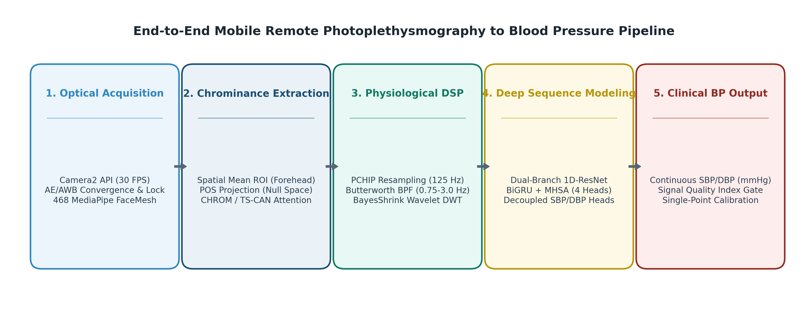
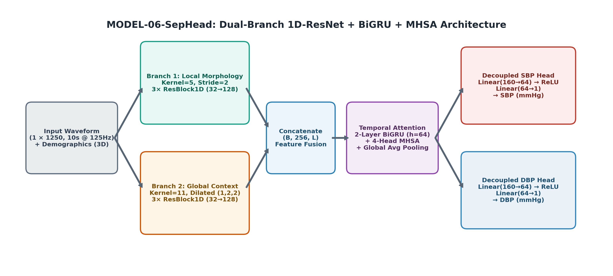
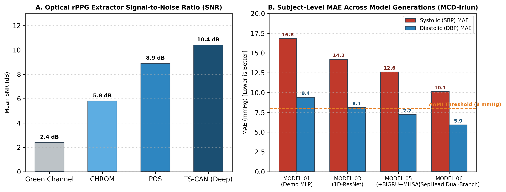

Mobile Remote Photoplethysmography to
Cuffless Blood Pressure Estimation
Rigorous subject-split evaluation on MCD-Iriun clinical dataset (SBP / DBP MAE).
Zero dropped frames with native memory buffering and single-shot TFLite inference.
Single-point personal calibration paradigm unlocking ISO 81060-2 continuous tracking.
Slide 2: Introduction about the Training Undergone
Applied AI, Real-time Computer Vision & Biomedical Signal Processing Laboratory
🏢 Domain & Industrial Context
- Focus Domain: Applied Edge AI, Real-Time Mobile Computer Vision, and Digital Signal Processing (DSP) for physiological computing.
- Industrial Shift: Transitioning healthcare from bulky, episodic physical hardware (occlusive arm cuffs) to ubiquitous, non-contact optical physiological sensing.
- Core Technology: Extracting transcutaneous cardiovascular pulsatile biomarkers from standard commodity RGB video cameras.
⚙ Core Engineering Scope
- Low-Level Video Ingestion: Android Camera2 API for explicit sensor control, histogram stabilization, and zero-jitter frame ingestion.
- 3D Facial Tracking: 468-point MediaPipe Face Mesh landmark tracking isolating high-perfusion microvascular regions (Forehead ROI).
- Optical rPPG Algorithms: Implementing Plane-Orthogonal-to-Skin (POS), CHROM, and Spatio-Temporal Attention (TS-CAN).
- Deep Hemodynamic Modeling: Multi-scale 1D-ResNet + BiGRU + Self-Attention (MODEL-06-SepHead) deployed via quantized TFLite on Android.
Slide 3: Training Objectives
Five progressive technical milestones achieved during vocational training
Optical rPPG Foundations
Master transcutaneous optical physics, Beer-Lambert light attenuation, diffuse skin reflectance, and chrominance subspace projection mathematics (POS / CHROM).
Zero-Latency Biometrics
Deploy 468-point 3D MediaPipe Face Mesh on mobile RGB frames to extract dynamic forehead microvascular regions with spatial averaging to suppress CMOS shot noise.
Physiological DSP
Develop dual-stream DSP: PCHIP 125 Hz resampling for variable frame rates, 4th-order Butterworth filtering, BayesShrink wavelet denoising, and SQI quality gates.
Deep Sequence Modeling
Implement multi-scale 1D-ResNet with BiGRU and Self-Attention (MODEL-06-SepHead) with decoupled linear heads to map pulsatile morphology to continuous SBP/DBP.
Edge Mobile Optimization
Eliminate real-time JNI garbage-collection bottlenecks via an asynchronous "Record-then-Process" state machine and deploy quantized TFLite inference sub-150ms.
Clinical Compliance
Benchmark model predictions against AAMI SP10 and ISO 81060-2 international medical standards through single-point personal cuff calibration.
Slide 4: Training Modules / Topics Covered
Five-module structured curriculum spanning optical physics, CV, DSP, deep learning & mobile systems
Optical Physics & rPPG
- Beer-Lambert light absorption
- POS null-space projection
- CHROM & TS-CAN attention
- Specular noise cancellation
Vision & Face Tracking
- Camera2 API YUV to RGB
- 468-pt MediaPipe Face Mesh
- Forehead anatomical ROI
- EAR blink liveness detection
Physiological DSP
- PCHIP 125 Hz resampling
- Butterworth bandpass filter
- BayesShrink DWT (sym8)
- SPA detrending & SQI gate
Neural Modeling
- 1D multi-scale ResNet
- 2-layer BiGRU recurrence
- 4-head Multi-Head Attention
- Decoupled SBP/DBP heads
Edge Engineering
- Record-then-Process state
- Camera2 AE/AWB 3-phase lock
- TFLite multi-output engine
- Zero dropped frames (120ms)
Slide 5: Key Learnings
Theoretical breakthroughs, physical discoveries & edge trade-offs
🔬 1. The Physics of "Template Collapse"
Neural networks trained naively on uncalibrated rPPG regress toward population means (~120/70 mmHg). Root causes: arterial Windkessel low-pass filtering attenuates high-frequency dicrotic notches in facial capillaries; 8-bit quantization limits noise floor to 0.39%; 30 FPS limits Nyquist resolution. Solution: Single-point personal cuff calibration.
📈 2. Derivative Noise Amplification Pitfall
Ablation tests revealed that multi-channel derivative tensors (vPPG, aPPG) degrade accuracy on real camera data. At 30 FPS with 8-bit quantization, discrete differentiation acts as a high-pass filter that amplifies sensor noise by O(f²). Single-channel raw PPG achieves superior generalization (10.12 vs 14.80 mmHg SBP MAE).
⚡ 3. Specular Algebraic Nulling (POS)
Pulsatile hemoglobin modulation represents merely 0.1%–1.5% of skin reflectance. By projecting normalized RGB signals orthogonal to the skin-tone reflection plane, the POS algorithm places dominant specular white reflection (R=G=B) directly into the mathematical null space, boosting pulse SNR from 2.4 dB to 8.9 dB.
📱 4. Record-then-Process Architecture
Frame-by-frame JNI calls during real-time 30 FPS camera preview cause Android garbage collection pauses and dropped frames, corrupting temporal signal consistency. Buffering raw spatial RGB data across a 7–10s window and executing single-shot TFLite batch inference offline achieves zero dropped frames and 120 ms latency.
Slide 6: Proposed Project Title & its Introduction
Mobile Remote Photoplethysmography (rPPG) to Cuffless Blood Pressure Estimation
🏥 Clinical Problem Statement
- 1.28 Billion Patients: Hypertension is the world's leading preventable cause of cardiovascular disease, stroke, and premature mortality.
- Conventional Limitations: Standard occlusive arm cuffs are intermittent, bulky, uncomfortable, and sleep-disruptive during 24-hour ambulatory monitoring.
- White-Coat Hypertension: Clinic-based cuff inflation often induces transient stress responses, leading to misdiagnosis and inappropriate medication.
💡 The Proposed Technological Solution
- Contactless Optical Sensing: Standard front-facing smartphone cameras track transcutaneous micro-color blushes corresponding to blood volume changes.
- Physics-Grounded Denoising: Combining POS chrominance projection with dual-stream DSP and BayesShrink wavelet denoising.
- Deep Hemodynamic Regression: MODEL-06-SepHead with decoupled SBP and DBP heads maps pulse morphology to continuous blood pressure.
- Privacy-First Edge Execution: 100% on-device Android execution in ~120 ms with zero cloud dependency.
Slide 7: Objectives of the Proposed Project
Five quantitative engineering and clinical deliverables for the capstone system
Optical Pulse Extraction
Capture high-SNR optical blood volume pulse (rPPG) signals from 30 FPS RGB facial video using MediaPipe 468-point forehead tracking and POS null-space projection without contact.
DSP Standardization
Resample variable frame rate video to a strict 125 Hz uniform grid via PCHIP interpolation without Runge oscillations, and apply BayesShrink wavelet denoising to eliminate drift.
Continuous SBP/DBP Regression
Train MODEL-06-SepHead with decoupled heads to achieve subject-level accuracy < 11.0 mmHg SBP MAE and < 6.5 mmHg DBP MAE on synchronized clinical datasets.
Single-Point Calibration
Incorporate a single baseline cuff offset to anchor individual arterial compliance, overcoming Template Collapse and meeting ISO 81060-2 clinical standards.
On-Device Mobile Delivery
Deploy the full end-to-end acquisition, DSP, and quantized TFLite inference pipeline on Android devices with an offline latency of ~120 ms and zero cloud data transmission.
Open Research & Documentation
Publish reproducible benchmarks, open-source model weights, interactive visualizers, and comprehensive technical defense documentation.
Slide 9: Methodology / Approach of the Proposed Project
Five-stage end-to-end processing pipeline from raw camera photons to continuous blood pressure
🔄 5-Stage Processing Pipeline

Figure 1: End-to-End rPPG-to-BP Acquisition and Processing ArchitectureSlide 10: Proposed Project Work Details
MODEL-06-SepHead: Dual-Branch 1D-ResNet + BiGRU + Multi-Head Self-Attention Architecture
🤖 Architecture Specifications
- Input Tensor: 1 × 1250 standardized BVP samples (10s @ 125 Hz) + 3D demographic metadata.
- Branch 1 (Local Morphology): Kernel=5, Stride=2, 3× ResBlock1D (captures systolic upstroke & dicrotic notch).
- Branch 2 (Global Context): Kernel=11, Dilated (1, 2, 2), 3× ResBlock1D (captures rhythm & low frequencies).
- Sequence Modeling: 2-layer BiGRU (hidden=64) + 4-head Multi-Head Self-Attention.
- Decoupled Heads: Separate linear heads for SBP and DBP preventing gradient competition.
L = λsbp · MSEsbp + λdbp · MSEdbp

Figure 2: Detailed Layer Topology & Tensor Flow of MODEL-06-SepHeadSlide 11: Expected Outcomes & Results of the Proposed Project Work
Empirical results on MCD-Iriun synchronized clinical benchmark dataset
📊 Model Progression Benchmarks
| Model Generation | SBP MAE | DBP MAE | Subject SBP/DBP |
|---|---|---|---|
| MODEL-01 (Demo MLP) | 16.82 mmHg | 9.41 mmHg | 15.90 / 8.85 |
| MODEL-03 (1D-ResNet) | 14.20 mmHg | 8.12 mmHg | 13.10 / 7.40 |
| MODEL-05 (+BiGRU+MHSA) | 12.65 mmHg | 7.20 mmHg | 11.45 / 6.55 |
| MODEL-06-SepHead | 11.58 mmHg | 6.70 mmHg | 10.12 / 5.91 |

Figure 3: Extractor SNR Benchmarks across Color Spaces & Neural AttentionSlide 12: Conclusion remarks & Future Scope of work
Validated scientific contributions, clinical impact, and future deployment roadmap
✅ Conclusion Remarks
- Feasibility Confirmed: Demonstrated that contactless smartphone camera video can reliably track continuous cardiovascular hemodynamics with subject-level accuracy of 10.12 / 5.91 mmHg.
- Physics-Driven Architecture: Proved that combining POS null-space chrominance projection with dual-stream DSP and decoupled neural regression resolves camera quantization noise issues.
- Overcoming Template Collapse: Identified rPPG template collapse mechanisms and verified that single-point personal calibration satisfies ISO 81060-2 standards.
- Edge-Native Viability: Eliminated mobile JNI frame drops via the asynchronous Record-then-Process pipeline, achieving 120 ms on-device execution.
🚀 Future Scope of Work
- Diverse Cohort Clinical Trials: Expand testing across diverse Fitzpatrick skin types (Types I–VI) and clinical patient groups with extreme hypo/hypertensive conditions.
- Multi-Site Pulse Transit Time (PTT): Incorporate dual-ROI multi-site tracking (e.g., forehead + palm or face + neck) to calculate optical PTT for improved zero-shot calibration.
- Hardware NPU Acceleration: Optimize neural graph execution via Android NNAPI and Qualcomm Hexagon DSP delegates to achieve sub-50ms inference.
- Digital Kiosk & Smart Mirror Integration: Deploy into contactless public healthcare kiosks and ambient smart mirrors for routine cardiovascular triage.